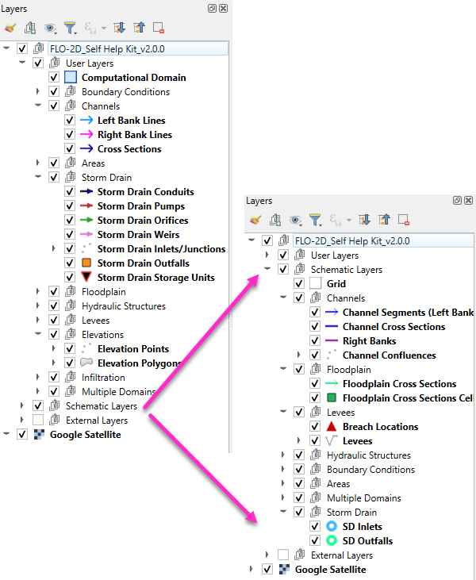

3. Chapter 3. FLO-2D MODEL SYSTEM
3.1. Assumptions and Special Conditions
3.1.1. Conceptualization
FLO-2D flood routing scheme moves around blocks of fluid on a discretized flow domain consisting of a system of square tiles. FLO-2D numerically distributes the volume in finite fluid blocks to mimic the floodwave progression and timing over the discretized surface. Conceptually FLO-2D is not a Lagrangian particle dynamics model but rather a finite volume model that moves discrete parcels of fluid around on the grid system in eight directions with realistic flow velocities.
3.1.2. Spatial Resolution
The spatial and temporal resolution of the FLO-2D model is dependent on the size of the grid elements and rate of rise in the hydrograph (discharge flux). The rate of change in flood discharge results in an incremental change in the flow depth when distributed over the available grid element surface area for a given timestep. Smaller grid elements may improve the resolution of the flood distribution at the cost of increased computational time, more extensive data files and boundary conditions. A balance must be achieved between the number of grid elements and an acceptable computational time. A grid size of 20 ft (8 m) to 500 ft (130 m) is usually appropriate for most simulations. Smaller grid elements will not only significantly increase the number of grid elements (the number of grid elements is quadrupled each time the grid element size is divided by two), but the rate of discharge flux per unit area of the grid element also increases.
FLO-2D was developed to simulate large flood events on unconfined surfaces. The discretization of the floodplain topography into a system of square grid elements to accommodate large discharges can obscure some topographic features such as mounds and depressions. This topographic variability will not affect the water surface when the entire valley is flooded, however, when simulating shallow flow, smaller grid elements should be used. Grid element rating tables can also be applied to reflect the variable topography within the grid element. Map resolution and accuracy should be considered when selecting the grid element size. Topographic contour resolution of plus or minus 1 ft (0.3 m) may not support grid elements less than 30 ft (10 m).
For one-dimensional channel flow, the spatial representation and variation in channel geometry is usually limited by the number of cross sections that are surveyed or cut from a DTM data set. Generally, one cross section represents 5 to 10 grid elements. The relationship between flow area, slope and roughness can be distorted by having an insufficient number of surveyed cross sections. Abrupt channel transitions can result in numerical surges if the choice of the roughness values is representative. The objective is to eliminate any discharge surges without substantially reducing the timestep so that the model runs as fast as possible. This can be accomplished by having gradual transitions between wide and narrow reaches.
3.1.3. Floodwave Attenuation and Discontinuities
Floodwave attenuation occurs in response to flood storage (both channel and overbank). Infiltration and evaporation losses can also contribute to floodwave attenuation. Floodwave attenuation represents the interaction of the friction and bed slope terms with the diffusive pressure gradient. While the application of the dynamic wave equation can reduce instabilities in the flood routing computations, simulating rapidly varying flow is still limited by the grid element size. The model does not have the ability to simulate the water surface profile of shock waves, rapidly varying flow (roll waves) or hydraulic jumps because of temporal and spatial discretization. These discontinuities in the flow profile are smoothed out in the model’s calculations. Subcritical and supercritical flow transitions are assimilated into the average hydraulic conditions (flow depth and velocity) between two grid elements; however, sequent depths of sustained hydraulics are computed.
3.1.4. Simulating Ponded Water Conditions
Ponded water conditions (>10 ft or 3 m with low velocities) in a flood simulation may require extra review. FLO-2D uses Manning’s equation to assess hydraulic roughness and it is based on uniform, fully developed turbulent flow. In a ponded water condition, Manning’s equation for channel flow does not apply. The velocity profile may not represent uniform flow with a vertical logarithm distribution. Flow near the bed could be in one-direction and flow near the surface in another direction (Figure 11). A ponded water surface might have a very mild, but using Manning’s equation, high average velocities could still be computed because the velocity is a power function of the depth. It is possible to compute reasonable or accurate water surface elevations in a ponded water condition with FLO-2D, but high Manning’s n-values should be applied to keep the depth integrated flow velocity below 1 fps (0.33 mps).

Figure 11. Vertical Velocity Profiles.
3.1.5. Basic Assumptions
The inherent assumptions in a FLO-2D simulation are:
Steady flow for the duration of the timestep;
Hydrostatic pressure distribution;
Hydraulic roughness is based on steady, uniform turbulent flow resistance;
A channel element is represented by uniform channel geometry and roughness.
These assumptions are self-explanatory, but they remind us that the flow conditions between grid elements are being averaged. For more information on reservoir routing and ponded flow, look at the Levee, Dam, and Wall Breach Guidelines.
3.1.6. Rigid Bed versus Mobile Bed
When sediment transport is not simulated, a rigid bed is presumed for the flood simulation. Rigid boundary conditions are appropriate for flow over steep slopes, urban flooding and mudflow events. This is because the amount of storage change associated with scour holes or deposition is generally negligible compared with the flood volume. The area of inundation associated with large flood events is unaffected by bed changes. Channel bed changes generally deviate about a mean condition, and the portion of the flood volume stored in the channel can be small relative to the volume stored on the floodplain during a large event. It is assumed in rigid bed simulations that the average flow hydraulics and water surface are not appreciably affected by the scour and deposition that might occur in an individual grid element. Entire channel reaches must aggrade or degrade to significantly affect the area of inundation. This is the reason that FEMA FIS river studies typically do not require sediment transport analyses. Simulating a mobile bed can be more important for smaller floods, for alluvial fan flows and where channel avulsion or sediment deposition might change the flow path.
3.2. Grid Element Size
The FLO-2D model uses a square grid element to discretize the project domain. After the project area has been identified, estimate the grid system size (as a rough rectangle) and determine the approximate number of grid elements that would be required for different size square grid elements such as 20 ft ,50 ft, 100 ft, etc. The grid element size and the number of cells in grid system will control how fast the FLO-2D flood simulation will run. Generally, the presumption that smaller grid elements will enable the model to numerically converge to a real solution is true, but there are limitations that the user must recognize to create an efficient flood routing model. The user should try to balance the available data with the project budget and schedule. Sometimes the data is limited but the project funding is workable, and timing is flexible. For other projects, an extensive dataset may exist, but the budget and effort are a constraint.
Highly detailed digital terrain models (DTMs) can generate a relatively accurate 1 m x 1 m topographic grid. Using a 1 m x 1 m grid element, may create a massive grid system for a project (a project 5 km x 5 km results in a grid system of 25 million cells). Massive grid systems may be difficult to manage for urban details and editing components. In general, it is recommended that large projects should be less than 3 million grid elements. A project of 1 to 3 million elements will have enough detail to accurately depict flood inundation. A large project between 1 to 3 million will require more time for pre-processing of data and post-processing of results as well as more computational resources. If more elements are necessary, the project area can be divided into two or more FLO-2D models with the outflow from the upstream model constituting the inflow to the downstream model. This outflow to inflow hydrograph method between model grid systems has been automated in the FLO-2D model (see Lesson 13 – Multiple Domains and Outflow Hydrographs for more details).
3.2.1. Grid Element Size Limitation
Project managers may request very small grid elements on a given project with the idea that small cells will result in a more accurate model. The area of inundation, however, is primarily a function of inflow flood volume or rainfall and there is usually uncertainty in the project hydrology. There are several numerical limitations confronting the use of small grid elements. For example, an inflow of 1 million cfs into a 10 ft grid element with a computational timestep of 1 second would result in an instantaneous inflow depth of 10,000 ft. To have a reasonable inflow depth of 1 ft per timestep would require a timestep of 0.0001 seconds and would result in a 24 hr flood simulation that would take days or weeks on a desktop computer.
A numerical flood model requires the transformation of a surface area into a discrete domain that results in discretized floodwave movement in both time and space. Computational timesteps and representative grid elements of surface water models are linked by the Courant-Friedrich-Lewy (CFL or Courant number) condition for numerical stability. The Courant number relates the floodwave movement to the model discretization in time and space to control how the fluid moves through the computational cells. The concept of the Courant number is that a particle of fluid should not travel more than one spatial increment Δx (cell) in one timestep Δt. If a particle of fluid travel across more than one grid point within a timestep, it will cause instabilities in the numerical solution. The timestep for the selected spatial spacing and the Courant number are not small enough to accurately capture the wave movement in the discrete system. In the FLO-2D model the Courant number limits the timestep Δt by:
where:
C = Courant Number (C < 1.0)
Δx = square grid element width
V = depth averaged velocity
c = floodwave celerity = (gd)0.5, where;
g is gravitation acceleration
d is the flow depth above the thalweg
Rearranging the Courant number timestep equation to:
results in a formula that relates the progression of the floodwave (V + c) to the discretized model in space and time. The Courant number C can vary from 0.1 to 1.0, and a value of 1.0 will enable the model to have the largest possible timestep. When C is set to 1.0, artificial or numerical diffusivity is theoretically zero for a linear convective equation. Testing has shown that the FLO-2D model can run faster (more consistent higher timesteps) with greater stability if the Courant number is set to values less than 0.6.
Understanding this linkage between time and space model discretization will reveal that there are two primary issues with very small grid elements. The first constraint is the discharge flux into a grid element. Discretizing the inflow hydrograph to a model for the computational timestep ∆t can result in a slug of discharge ∆Q to the inflow node on the rising limb of the hydrograph that could be severe (Figure 12).

Figure 12. Discharge Hydrograph.
Steep rising hydrographs and small grid elements can result in slow models. Very small timesteps may be required for a sufficiently small inflow volume to avoid numerical instability.
The second constraint is that the model uses the shallow flow equations of motion. The friction slope term in the momentum equation is based on Manning’s equation. High flow depths with respect to the small differences in water surface elevation are not accurately represented by Manning’s equation because the relationship in flow area to the water surface slope is no longer valid. If the flow depth to grid element side width is too large, the friction slope Sf between elements may be small compared to the hydraulic radius Rh and the exponents in Manning’s equation (Rh2/3 vs Sf1/2) need to be adjusted. High velocities associated with the hydraulic radius term can be predicted to result in numerical instability for small grid elements. Again, very small timesteps would be required to satisfy the Courant condition. Manning’s equation is poorly suited for simulating the friction slope in a ponded flow condition.
3.2.2. Grid Element Size Selection
It is difficult to assess the relationship of the discharge flux on the rising limb of an inflow hydrograph, so as alternative approach a rough estimate of the peak discharge can be used. Based on FLO-2D model experience, the relationship of the peak discharge QPeak divided by the surface area of one grid element Asurf for a fast model should be about:
Qpeak/Asurf ~ 3 cfs/ft2 or 1 cms/m2
or for a slow model:
Qpeak/Asurf ~ 10 cfs/ft2 or 3 cms/m2
Within this range, the closer this discharge to surface area ratio is to 3 cfs/ft2 the faster the model will run. A Qpeak/Asurf over 10 cfs/ft2 will result in an excruciatingly slow model.
A small grid element size can also result in a huge number of grid elements for a given project area resulting in a slow model regardless of the inflow discharge flux. The table below gives a general idea of the model speed in relationship to the number of grid elements.

There are several other factors that contribute to the model speed regardless of the number of grid elements including model components for channels flow, urban complexity, a storm drain system, or ground water modeling. In addition, a large number of grid elements requires a lot of model component development time and potential debugging and editing time. All of these factors should be considered when selecting the grid element size regardless of the accuracy or detail in the topographic data set.
3.2.3. Options to Mitigate Small Grid Elements
There are a couple modeling techniques that can improve the model speed and numerical stability for grid system that was created with small grid elements. Before getting started on adding components to a FLO-2D model, divide the project into multiple grid systems. The divided grid systems can be side to side or upstream to downstream and they do not have to have the same size cells. For example, the upstream grid system could encompass the watershed above the urban area and larger grid elements can be used. By overlapping the systems, the upstream outflow nodes can generate the inflow hydrographs to the downstream smaller cell grid system automatically (see the White Paper entitled “Outflow Hydrograph Tool” available at the FLO-2D website).
Another approach that can be used when a high inflow discharge hydrograph is assigned to small grid elements is to divide the hydrograph over several inflow grid elements. This can be accomplished by assigning the same grid element elevation and n-value to each inflow node which will eliminate flow exchange between the inflow cells. In addition, it is suggested that several downstream rows of elements be assigned the same elevation and n-value but lower than the upstream inflow nodes to provide some slope in the downstream direction. These first several rows of grid elements including the inflow nodes are considered to be sacrificial elements to get the flow moving smoothly down the grid system. The grid system can be enlarged to accommodate the extra inflow cells and their downstream neighbors.
Selecting a grid element size for a given project basically comes down to budget and the time and effort necessary to generate and edit a detailed urban model. It is necessary to balance the cell size with the discharge flux. Consider the following:
Model runtime;
Model accuracy and detail;
The time it takes to prepare and edit the model components;
The number of required simulations.
Selecting a small grid element size less than 15 ft or 5 m for large projects is not recommended. Typically, the DTM data resolution does not justify using grid elements that small and further accuracy is lost when the results are mapped. Computer runtimes of about 4-8 hrs usually provide reasonably detailed results. The area of inundation is generally controlled by the volume of the inflow hydrograph(s) and/or rainfall. A coarser grid system makes the edges more jagged, but the overall area of inundation is the about same. It the grid cell size is reduced by half, the number of grid elements in model is quadrupled.
3.3. Roughness Parameter Variability
The constitutive fluid motion equations in the FLO-2D are the continuity equation and the momentum equation:
where:
h is the flow depth
V is the depth-averaged velocity in one of the eight flow directions x for a computational timestep ∂t
g is the gravitational acceleration.
i is the excess rainfall intensity; and may be nonzero on the flow surface.
Sf is the friction slope component; and is based on Manning’s equation.
So is the bed slope pressure gradient
The other terms include convective and local acceleration terms.
The two unknown variables are velocity and flow depth.
The discharge Q is given by Q = VA where A is the cross section flow area.
Open channel (or floodplain) uniform flow is characterized by a constant depth, velocity, flow area and discharge such that the bed slope, water surface slope and energy grade line are all parallel (i.e., Sf = So for uniform flow). Often uniform flow accompanied by a steady flow condition (such as flume flow). Unsteady, uniform flow would not occur naturally. For practical purposes natural uniform flow is almost always turbulent implying that a stable velocity distribution has been attained and the turbulent boundary layer is fully developed. There a number of uniform flow mean velocity equations for open channels and Manning’s equation is the best known of these
where:
R = hydraulic radius,
Sf = friction slope,
n = Manning’s roughness coefficient.
For wide cross section flow the hydraulic radius approaches the flow depth and the flow area can be expressed as a power function of the flow depth:
where:
a is a regressed coefficient
b is a regressed exponent
The hydraulic radius exponent value (0.667) in Manning’s equation has been known to vary over a range from about 0.59 to 0.85 depending primarily on cross section geometry and roughness (Chow, 1959). The roughness coefficient or Manning’s n-value varies with a number of factors including but not limited to bed friction, bed form, expansion/contraction, vegetation, obstructions, and flow depth.
The discharge Q is a function of three variables, flow area slope and roughness when computing a solution to the equations of motion:
Since the discharge is function of the square root of the slope, the rate of change in the discharge is not overly sensitive to change in slope. Similarly, the discharge is only inversely proportional to the roughness coefficient. The discharge, however, is very sensitive to small changes in the flow area to the second power. An n-value is selected to balance the relationship between the discharge, slope, and flow area for steady, uniform flow, but since overland is neither steady nor uniform the variation in the roughness coefficient should be dynamic during a flood. The hydraulic radius exponent can also vary but is held constant in the FLO-2D model and the n-value coefficient is further adjusted to compensate for the constant exponent. The n-value adjustments eliminate the need for a Boussinesq coefficient for the convective acceleration term and a velocity distribution coefficient for the local acceleration term.
The FLO-2D computation routing algorithm is an explicit scheme that is subject to the Courant-Friedrich-Lewy (CFL or Courant number) condition for numerical stability. The Courant number relates the floodwave movement to the model discretization in time and space. The concept of the Courant number is that a particle of fluid should not travel more than one spatial increment Δx (between the center of cells) in one timestep Δt. If the model computational timestep exceeds the Courant relationship timestep, the stability criteria is exceeded and a model computational timestep decrement occurs. Mathematically the Courant relationship is given by:
where:
C = Courant Number (C ≤ 1.0)
Δx = FLO-2D square grid element width (distance between node centers)
V = depth averaged velocity;
c = floodwave celerity = (gd)0.5, where;
g is gravitation acceleration
d is the flow depth above the thalweg.
This equation relates the progression of the floodwave (V + c) to the discretized model in space and time. The Courant number C can vary from 0.1 to 1.0, and a value of 1.0 will enable the model to have the largest possible timestep. When C is set to 1.0, artificial or numerical diffusivity is theoretically zero for a linear convective equation. Testing has shown that the FLO-2D model can run faster (more consistent higher timesteps) with greater stability if the Courant number is set to values less than 1.0. The FLO-2D default Courant number is 0.6 which will provide a numerically stable model for most applications. Rearranging the CFL relationship, the model computes the Courant timestep Δt as:
Numerical instability occurs when the computational timestep is too large or the rate of change in the timestep is too large and too much volume enters or leaves a grid element (discharge flux). The corresponding change in flow depth can result in a high velocity (or Froude number) with the discharge causing a rapid fluctuation in the grid element water surface elevation (surging). Numerical surging may cause spikes in the discharge hydrograph, adverse water surface slope in the downstream direction or unreasonable maximum velocities or Froude numbers [Fr = V/(gh)1/2]. Substituting the Froude number Fr for the velocity, the relationship between the Courant number and the Froude number is:
It is demonstrated with these equations that there is a unique relationship between discharge, n-value, Froude number and numerical stability (Courant number) with varying flow depths. Selecting one steady, uniform flow n-value for a full range of flood flow conditions on a cell is not realistic and can lead to numerical instability and unreasonable Froude numbers.
3.3.1. Manning’s n-value Variation with Flow Depth
Typically, Manning’s n-values are assigned based on bed friction, form drag, or vegetation and one value is assigned for all flow conditions. For FLO-2D simulations, it is recommended that the n-value be assigned to represent channel bankfull conditions or for overland flow a depth of roughly 1 m (3 ft) deep. Roughness is known to increase with decreasing flow depth and can vary with accelerating and decelerating flows (any departure from a steady and uniform flow condition).
Manning’s equation can be assumed to apply above the turbulent boundary layer. By definition the turbulent boundary terminates at depth where the vertical velocity distribution for uniform steady flow in a rough wide channel has attained a value of 99% of the free stream flow. At the lower depth, this flow regime extends from the height of the displacement thickness near the laminar boundary layer and varies as a function of the Reynolds number. The displacement thickness is generally 1/8 (rough) to 1/10 (smooth) of the turbulent boundary layer. If the flow is very shallow, roughness elements may protrude through the laminar sublayer and into the flow. Flows are considered hydraulically rough if the grain size or roughness element is greater than 6 times the laminar boundary layer:
where:
ν = kinematic viscosity
u* = shear velocity
The applicability of Manning’s equation to a given flow condition depends on the relative submergence of the roughness elements (R/ks) where ks is the effective roughness height. In general, Manning’s equation is appropriate for a relative submergence (Julien, 1995):
which will correspond to the Manning-Stickler fixed bed roughness as function of sediment size D relationship (Simons and Senturk, 1976):
For lower a submergence value (R/ks < 100), the logarithmic form of the resistance equation should be used (Julien, 1995). For flow transporting sediment in suspension, the flow will be primarily turbulent if:
Typical roughness height for grain size bed material can range from 0.0015 ft for rough concrete to 0.01 ft for coarse sand or uniform earth channels. In this case Manning’s equation for a coarse sand plane bed would be applicable to about 0.7 ft. Julien (1995) plotted the logarithmic velocity equation solution for turbulent flow over rough plane boundaries and it is noted that Manning’s equation can still provide a reasonable approximation as low as about R/ks ~ 25. Taking this as a less conservative approach for a rough surface where the roughness height is sand size or smaller, Manning’s equation should apply if the flow depth is roughly 25 times the relative roughness. For coarse sand this would be a flow depth of about 0.25 ft.
Manning’s equation will overpredict the velocity for shallow flow if typical low n-values assigned to deeper flows are applied. Manning’s equation was an empirical equation that relates the velocity to several parameters using a coefficient (n-value) for flow depths generally greater than 0.5 ft. When computing velocity for shallow flow depths near the FLO-2D tolerance value TOL about 0.1 ft or smaller, it is unlikely that the flow will be fully developed turbulent flow. In lieu of using multiple mean velocity equations, one for deeper flow and one for shallow flow, it is necessary to compensate for overpredicting the velocity using Manning’s equation by assigning higher shallow n-values or using FLO-2D depth variable n-values or both. Overpredicting the velocity may result in unreasonable Froude numbers or exceeding the Courant condition for model numerical stability.
3.3.2. FLO-2D n-Values Adjustments
The FLO-2D model can adjust n-values during a simulation to maintain a reasonable maximum Froude and improve numerical stability. There are four n-value adjustment tools:
Global and spatially variable shallow n-value;
Depth integrated n-value;
Courant number n-value adjustments;
Limiting Froude number n-value adjustments.
SHALLOW Flow Roughness: If shallow flow has low n-values that result in unreasonably high velocities, the existing water volume stored on the grid element can be evacuated in one timestep. This results in a wetting and drying response and the possible cascading numerical instability that plagues many 2-D flood routing models. To avoid very shallow flow instability issues, set a reasonable TOL value and set the global shallow n-value (SHALLOWN) to 0.1 or 0.2. This will ensure enough volume is left on the grid element and the velocities will be realistically slow enough to avoid evacuating the grid element. The SHALLOWN default value of 0.2 is recommended and the model has rules set up to allow the SHALLOWN value to interact with the depth averaged flow n-values. Individual grid element SHALLOWN(i) values can be assigned in SHALLOWN_SPATIAL.DAT to create spatial variability to delineate between street flow and flow in fields.
Depth Integrated n-values: To improve the timing of the floodwave progression through the grid system, a depth variable roughness can be assigned. The equation for the grid element roughness nd as function of flow depth is:
where:
nb = bankfull discharge roughness
depth = computed model flow depth
dmax = flow depth for drowning the roughness elements and vegetation (hardwired 3 ft or 1 m)
This equation prescribes that the variable depth floodplain roughness is equal to the assigned flow roughness for the complete submergence of all roughness (assumed to be 3 ft or 1 m) and it is applied by the model as a default condition. The user can turn ‘off’ the depth roughness adjustment coefficient for all grid elements by assigning AMANN = -99 in CONT.DAT. For channel flow, the depth integrated roughness computation is turn ‘on’ by assigning a ROUGHADJ value in the first line of data of each channel segment in CHAN.DAT
This depth integrated roughness adjustment will slow the downstream progression of the floodwave. It is applied valid for flow depths ranging from 0.5 ft (0.15 m) to 3 ft (1 m). For example, at 1 ft (0.3 m), the computed roughness will be approximately 1.3 times the assigned roughness for a flow depth of 3 ft. Using the depth integrated roughness may reduce unexpected high Froude numbers. As the flow depth increases from a dry bed condition, the following rules apply:
0.0 < SHALLOWN < 0.1 SHALLOWN = 0.1 |
SHALLOWN = 0.1 |
|
0.0 < flow depth < 0.2 ft (0.06 m) |
n = SHALLOWN value |
|
0.2 ft (0.06 m) < flow depth < 0.5 ft (0.15 m) |
n = SHALLOWN/2 |
|
0.5 ft (0.15 m) < flow depth < 3 ft (1 m) |
nd = nb *1.5 * e –(0.4 depth/dmax) |
|
3 ft (1 m) < flow depth |
n = assigned value in MANNINGS_N.DAT |
|
Courant Number n-value Adjustments: When the Courant number timestep is exceeded for a given cell, the model makes an n-value adjustment for the next computation routing loop through grid system. This is an artificial intelligence approach to enable the model to avoid numerical instability at sensitive grid elements as the floodwave progression continues downstream. The Courant number n-value adjustments are based on the number of times (N) that a specific grid element has consecutive timestep decrements as follows:
3 < N ≤ 5 n-value increased by 0.005 |
6 < N ≤ 10 n-value increased by 0.002 |
11 < N n-value increased by 0.001 |
If n-value > 0.2 n-value = 0.2 |
The n-value adjustments based on exceeding the Courant number timestep are turned ‘off’ or not applied during a model simulation if AMANN = -99 in CONT.DAT. The maximum n-values are reported in ROUGH.OUT if a given n-value is greater than the originally assigned n-value.
Limiting Froude Number n-value Adjustments: The Froude number provides a non-dimensional relationship between the velocity and depth that defines the transition between subcritical and supercritical flow. It is the ratio of flow velocity to the floodwave celerity and relates the flow kinematic forces to the gravitational forces. There is an upper limit to the Froude number for both channel and overland flow for various conditions that should not be exceeded. Typical upper limits for Froude numbers include:
Major rivers: |
0.3 – 0.6 |
(not a steep watershed river) |
Floodplain: |
0.5 – 0.8 |
(grasslands, fields, not an urban environment) |
Alluvial fans: |
0.9 – 1.1 |
(steep slope, sediment transport mobile bed) |
Street flow: |
1.1 – 1.5 |
(uniform slope and pavement conditions) |
There are exceptions to this general range of limiting Froude numbers, but the user has the option of assigning a global overland limiting Froude number (FROUDL in CONT.DAT), a channel limiting Froude number by reach, or a spatially variable floodplain limiting Froude number (FPFROUDE.DAT).
For mobile bed conditions on alluvial fans, as the slope increases, competent flow for sediment transport asymptotically approaches critical flow. As the flow accelerates to critical depth, more sediment is entrained and the hydraulic oscillates with rapid energy dissipation and severe bed erosion. The flow is forced to stay around critical flow conditions by incipient motion thresholds which define the limiting Froude (Grant, 1997):
where:
τ*cr is the critical shear stress for incipient motion for different size bed material.
While most flood routing models report the flow Froude number, none of them use the Froude number to adjust the model parameters. In some cases, the reported Froude number may indicate supercritical flow for a clearly subcritical flow regime. In FLO-2D model, the user assigns a limiting maximum Froude number that should not be reached for the local condition and the model automatically adjusts the n-value to sustain a reasonable Froude number on a grid element basis. When the limiting Froude number for a given grid element is exceeded, the n-value is increased according to the following criteria:
Percent increase over the original n-value incremental increase in n-value (additive)
0.2 > % increase 0.0005 |
0.2 < % increase < 0.5 0.0002 |
0.5 < % increase < 1.0 0.0001 |
1.0 < % increase < 2.0 0.00005 |
When the limiting Froude number is no longer exceeded the n-value is reduced by -0.0002 until the initially assigned n-value is reached. The maximum n-values (if different from the originally assigned n-value) are reported to the ROUGH.OUT file.
3.3.3. Applying the n-value Adjustments
To use the limiting Froude number to control numerical instability, the data files have to be adjusted to accommodate n-value changes and essentially empty the ROUGH.OUT file. First select reasonable n-values that account for all the flow resistance including vegetation, bed forms, bed friction, contraction and expansion, flow in bends, adverse slope, etc. Then apply the depth variable n-value adjustment (AMANN = 0 in CONT.DAT). Finally assign limiting Froude number to calibrate the n-values. After a simulation is complete, review ROUGH.OUT to determine if any of the maximum n-value appears to be too large. Revise the unreasonable n-values in MANNINGS_N.RGH and then delete FPLAIN.DAT and MANNINGS_N.DAT and rename MANNINGS_N.RGH to MANNINGS_N.DAT for the next simulation.
If the global limiting Froude number is zero (FROUDL = 0.0), then the limiting Froude number n-value adjustment is not used by the FLO-2D model. In versions 2017 and earlier, instead of the global limiting Froude number equal to zero, assigning AMANN = -99 in CONT.DAT turned ‘off’ the n-value adjustment for the limiting Froude number.
The limits of the FLO-2D model can be tested by turning off the depth integrated floodplain n-values (AMANN = -99), by setting shallow n-value to zero (SHALLOWN = 0, and by having no global limiting Froude number assignment (FROUDL = 0). This combination of data parameters means that the n-value assigned for the depth of 3 ft is also being applied for the very shallow flows.
To summarize, assigning conventional steady, uniform flow Manning’s n-values are not equivalent to unsteady, non-uniform grid element n-values in a discretized flood routing model. Spatially variable and depth variable n-values are key to achieving FLO-2D numerical stability which is inherently linked to the Courant number and reasonable local Froude numbers.
Manning’s equation will overpredict the velocity for shallow flow if typical low n-values assigned to deeper flows are applied. Manning’s equation was an empirical equation that relates the velocity to several parameters using a coefficient (n-value) for flow depths generally greater than 0.5 ft. When computing velocity for shallow flow depths near the FLO-2D tolerance value TOL about 0.1 ft or smaller, it is unlikely that the flow will be fully developed turbulent flow. In lieu of using multiple mean velocity equations, one for deeper flow and one for shallow flow, it is necessary to compensate for overpredicting the velocity using Manning’s equation by assigning higher shallow n-values or using depth variable n-values or both.
3.3.4. Flood Component Impact
FLO-2D can simulate essentially the entire hydrologic and hydraulic flood movement system through many detail components including rainfall, infiltration, channel and street flow, flow around buildings, levee failure, flow through hydraulic structures, storm drains, and numerous other components. This level of detail requires a large number of variables. The components having the greatest effect on the area of inundation are as follows:
Flood Inflow Volume: Rainfall and inflow hydrograph and losses directly affect the area of inundation.
Topography: The overland flow path is primarily a function of the cell topography.
Roughness: The floodplain roughness n-values control the overland floodwave speed. River channel n-values can force more water overbank.
Flow Area: The relationship between the channel cross section flow area, bed slope and roughness control the floodwave routing, attenuation, and numerical stability. Flow area has the most important effect on channel routing stability. Changes in the cross section flow area between channel elements should be limited to 25% or less. More cross section surveys may be necessary to simulate rapidly changing flow geometry. Constructed rapid transitions in channel geometry (such as concrete lined channels) can be modeled but will require smaller timesteps and more channel detail.
Floodplain Storage Loss: Buildings and other loss of storage represented by the Area Reduction Factors (ARF) can significantly impact the local flood distribution.
Flow Path Obstruction: Levees, buildings, walls, berms, and embankments (railroad or highway) can contain flooding or completely obstruct the flow progression over the floodplain. Levees and walls can also overtop or fail in the model and send floodwaves over floodplain dry areas. Hydraulic structures can also control water surface elevations and limit downstream discharge.
Flood Redistribution: Channels, streets, and storm drains can redistribute the flood from one area of the model to another. Storm drains will also significantly impact more frequent flood events by removing surface water volume and debouching it off the project area.
Sediment Loading: Most watershed and alluvial fan flooding should be bulked for sediment loading. Typically, sediment volume will have a greater impact on the area of inundation than local scour or deposition. If the sediment loading is relatively minor, the XCONC factor in the CONT.DAT file can be used to uniformly bulk all the inflow hydrograph volumes. Typically, watershed flooding that will not generate mudflows can be conservatively bulked using an XCONC value of 10% to 15% by volume. River flood sediment concentration will rarely exceed 5% by volume and setting XCONC = 5% will conservatively bulk the inflow hydrograph volume by 1.05. Mudflow should be simulated by assigning concentrations by volume to the inflow hydrographs and the XCONC factor should not be used.
3.4. Inflow and Outflow Control
A discretized flood hydrograph from an upstream basin can be inflow either to the floodplain, channel, or both. More than one grid element can have an inflow hydrograph. Hydrographs can be assigned as either direct inflow or outflow (diversions) from a channel. This could be a simple constant diversion of 100 cfs or a variable hydrograph over the course of the simulation. If mudflows are being simulated a volumetric sediment concentration or sediment volume must be assigned to each water discharge increment.
For flow out of the grid system, outflow grid elements must be specified for either the floodplain or channel or both. The discharge from outflow elements is equal to sum of the inflows to the outflow cell and a flow depth is then assigned to the outflow element based on a weighted average of the upstream flow depths. In this manner, normal flow is approximated at the outflow element. The outflow discharge is totally removed from the system and is accounted to the outflow volume. It is possible to specify outflow from elements that are not on the boundary of the grid system, but outflow elements should be treated as sinks (all the inflow to them is lost from the flow system). Outflow elements should not be modified with ARF’s or WRF’s, levees, streets, etc. Channel outflow can also be established by a stage-discharge. This option can be used when channel outflow occurs at a hydraulic structure or when a known discharge relationship is available.
Stage-time relationships can be specified for either the floodplain or channel. These relationships can be assigned for outflow elements or for any elements in the system. When a stage-time relationship is specified, volume conservation is accounted for when the discharge enters or leaves the stage-time designed grid element. Stage-time relationships provide opportunity to simulate coastal flooding related to ocean storm surge, hurricane surges or tsunamis (Figure 13). In addition, the backwater effects of tidal variation on river and estuary flooding can be modeled.

Figure 13. Tsunami Wave Progression Overland in an Urban Area (Waikiki Beach, Hawaii).
3.4.1. Inflow and Outflow Node Guidelines
Inflow and outflow nodes represent the model interface between a FLO-2D model flow domain and the rest of the hydrologic world. They constitute the boundary condition to share discharge in and out of the project grid system. Inflow nodes enable off-project flood hydrographs to enter the model and outflow represent sinks that eliminate water from the grid system. Inflow and outflow nodes can be applied indiscriminately for most flood conditions. There are only a few guidelines to observe when setting up these special cells.
There are some projects where inflow or outflow nodes may not be required. If a model is a watershed or urban rainfall-runoff model with no external flood inflows, no inflow nodes are necessary. Similarly, if a rainfall or flood model is a closed basin or flows into a reservoir or the ocean, no outflow nodes need to be defined. When setting up a model, typically one inflow node and one or more outflows are assigned near the upstream and downstream boundaries, but if no outflow nodes are assigned, the flow will pond against the downstream boundary.
After the project grid system has been established, the next step is to assign inflow and outflow nodes. Sometimes an unnecessarily small grid element size has been selected under the presumption that smaller cells will provide better model resolution (see the White Paper entitled ‘Selecting Grid Element Size’. For large flood hydrographs with a high peak discharge, some inflow node adjustments may be required to create an efficient flood routing model. Typically, outflow node modifications are unnecessary for the grid element size, however, for a project greater than 3 million elements it may be more expedient to set up multiple models by dividing the project area into two or more FLO-2D models with the outflow from the upstream model constituting the inflow to the downstream model. This outflow to inflow hydrograph method between model grid systems has been automated in the FLO-2D model (see the White Paper ‘Outflow Hydrograph Tool’ or Lesson 13 – Multiple Domains and Outflow Hydrographs.
3.4.2. Inflow Nodes
Inflow nodes introduce flood hydrographs from outside the project area to the FLO-2D grid system. A given project may be limited in areal scope to an urban area, downstream of a dam breach, or alluvial fan requiring one or more upstream inflow flood hydrographs. This may include any number of off-site flood hydrographs:
A FLO-2D watershed rainfall-runoff model upstream hydrograph;
A flood hydrograph from any other external model such as HEC-1 or HEC-HMS;
A large upstream river hydrograph;
Any small urban area off-site flood hydrograph;
A typical INFLOW.DAT file (Figure 14) mudflow inflow hydrograph with both water discharge and sediment concentration is shown in Figure 15 along with the data format (see the Data Input Manual for the variable description).

Figure 14. INFLOW.DAT File Example.

Figure 15. Typical Inflow Flood Hydrograph with Mudflow Sediment Concentration by Volume.
Project managers may request small grid elements on a project inferring that small cells will result in a more accurate model. The area of inundation, however, is primarily a function of inflow flood volume or rainfall and discretizing the inflow hydrograph for the computational timestep ∆t can result in a slug of discharge ∆Q to the inflow node on the rising limb of the hydrograph that could be severe. Steep rising hydrographs and small grid elements can result in slow models because small timesteps may be required for a sufficiently small inflow volume to avoid numerical instability. It is difficult to assess the relationship of the discharge flux on the rising limb of an inflow hydrograph, so as an alternative approach, a rough estimate of the peak discharge can be used. Based on FLO-2D model experience, the relationship of the peak discharge QPeak divided by the surface area of one grid element Asurf for a fast model should be about:
Qpeak/Asurf ~ 3 cfs/ft2 or 1 cms/m2
or for a slow model:
Qpeak/Asurf ~ 10 cfs/ft2 or 3 cms/m2
Within this range, the closer this discharge to surface area ratio is to 3 cfs/ft2 (1 cms/m2) the faster the model will run. A Qpeak/Asurf over 10 cfs/ft2 will result in an excruciatingly slow model.
3.4.3. Inflow Node Guidelines
3.4.3.1. Floodplain Inflow Nodes
The primary purpose of the inflow node is to get the flood on the grid system and moving downstream. While almost any floodplain grid element can be assigned as an inflow node, there are some guidelines that will facilitate introducing an inflow hydrograph to a specific location:
Assign the inflow element as close to the actual hydrograph location as possible.
An inflow node can be assigned next to the grid system boundary.
Contiguous elements downstream should have lower elevation than the inflow node.
Avoid assigning an inflow node next to an outflow node.
Review the inflow node elevation and n-values with respect to all the contiguous cells using the GDS or QGIS. Avoid assigning the inflow in a depression and raise the inflow node elevation, if necessary, to create a downslope to the contiguous downstream elements.
If the inflow hydrograph discharge flux criteria discussed above is exceeded, it is possible to divide the inflow hydrograph over two or more grid elements. This will reduce the inflow discharge to the inflow elements and speed up the model. The following suggestions will improve the inflow hydrograph distribution over several elements:
Assign equal inflow hydrographs to all the inflow nodes in a group.
In the GDS or QGIS assign equal elevations and n-values to all the grouped inflow nodes.
For one or more downstream rows of cells, assign equal but lower elevations and equal n-values to each row.
The result of this inflow node adjustment will be several rows of elements that are designed to get the inflow hydrograph onto the grid system and moving downstream. These sacrificial grid elements should be considered as outside of the representative project area of inundation.
It is also possible to force the flow downstream by elevating all the upstream contiguous cells around the inflow node(s) as indicated by Figure 16. There would also be no flow sharing between inflow nodes because of the equal inflow hydrographs resulting in equivalent inflow depths.

Figure 16. Multiple inflow nodes (green) assigned with adjusted elevations and n-values.
A similar isolated inflow condition can be generated by assigning blocked cells around the inflow node (ARF = 1) as shown in Figure 17.

Figure 17. Blocked cells (ARF = 1) surrounding an inflow node (green).
3.4.3.2. Channel Inflow Nodes
If the inflow hydrograph is assigned to the upstream channel element and the peak discharge is overflowing the banks, a similar isolation approach can be implemented for the channel inflow node. The channel inflow cross section can be expanded, and its bank elevations raised to convey the inflow hydrograph peak discharge without overbank flow. This modification can be made in the PROFILES processor program or in QGIS (Figure 18 and Figure 19).

Figure 18. Original upstream channel cross section.

Figure 19. Revised channel cross section to contain the peak discharge.
The channel cross section in Figure 18 was expanded from 150 ft to 180 ft wide and 7 ft deep to 15 ft deep. Once the channel inflow node cross section has been expanded to contain the inflow peak discharge, the downstream cross sections for five to ten channel elements can be re-interpolated in PROFILES. Select a downstream channel element (perhaps one of the original surveyed cross sections labeled with a X- in front of the name) and re-interpolate the slope and shape choosing the channel inflow node as the upstream cell. The channel cross sections for the elements in-between the two interpolated bookend cells will gradually decrease in cross section flow area (Figure 20). Overbank flooding will then occur somewhere downstream of the channel inflow node. The channel hydraulic results in this interpolated reach are considered outside the project area.

Figure 20. Upstream channel elements with expanded cross sections.
(outlined in red)
Channel inflow directly to the upstream channel interior elements from the floodplain surface is an option (see the White Paper entitled ‘Channel Termination Inflow Guidelines’. When the channel is positioned where it is possible for the floodplain flow to enter the upstream channel terminus, it may be necessary to block the floodplain inflow from reaching the interior channel elements. This may occur from overbank flow circumventing the end of the channel or from rainfall. In this additional channel inflow is unwanted, block the cells in green in Figure 21 with an ARF = 1 assignment or by adjusting elevations so the flow cannot reach the green cells.

Figure 21. Block the inflow to the interior channel elements.
3.4.3.3. Inflow Nodes Summary
When a high peak discharge inflow hydrograph is assigned to small grid elements, the hydrograph can be divided equally over several inflow grid elements. Assigning the same grid element elevation and n-value to each inflow node will eliminate flow exchange between the inflow cells. It is suggested that several downstream rows of elements be assigned the same elevation (and n-value) but lower than the upstream inflow nodes to provide some slope in the downstream direction. Similarly, the channel inflow node can be expanded to contain the peak discharge and the cross section re-interpolated over several downstream elements to provide a smooth transition to the actual project channel.
Review the maximum velocities in VELTIMEFP.OUT or VELTIMEC.OUT files to see if inflow nodes or their neighbor cells are slowing down the model in TIME.OUT files. Inflow nodes are not sacred, and the user is encouraged to adjust the number of inflow cells, channel cross sections, elevations, and n-values to enable the inflow hydrograph to smoothly enter the grid system. These inflow nodes and their neighbor elements should be considered artificial cells that are outside of the project area to get the floodwave moving down the grid system. If necessary, the grid system can be enlarged to accommodate the extra inflow cells and their downstream neighbors.
3.4.4. Outflow Nodes
Outflow nodes represent sinks for discharging the flow out of the grid system and can be specified for either the floodplain or channel or both. The discharge from an outflow node is equal to sum of all the inflows to the outflow cell and a flow depth is then assigned to the outflow element based on a weighted average of the upstream flow depths. In this manner, normal flow is approximated at the outflow element. The outflow discharge is totally removed from the system and is accounted as outflow volume. It is possible to specify outflow from elements that are not on the grid system boundary, but outflow nodes should be treated as sinks (all the inflow to them is lost from the flow system). If a portion of the grid system is isolated by outflow nodes and there is flow on both sides of the outflow nodes (perhaps from rainfall), this will distorted the normal depth calculations and the outflow volume will not be conserved (Figure 22). This flow condition should be avoided by having discharge to the outflow node from only one side or direction.

Figure 22. Discharge to outflow nodes from both sides.
Other outflow guidelines include:
Outflow elements should not be modified with ARF’s or WRF’s, levees, streets, etc.
Do not double up outflow nodes or isolate outflow nodes with no connection to upstream inflow (Figure 23).
Channel outflow can also be established by a stage-discharge. This option can be used when channel outflow occurs at a hydraulic structure or when a known stage-discharge relationship is available.

Figure 23. Outflow node assignment and stacked nodes.
(acceptable – left; unacceptable – right)
Incorrect outflow nodes are outlined in red and should be removed.
Stage-time relationships can be specified for either the floodplain or channel outflow nodes to provide the opportunity to simulate coastal flooding related to ocean storm surge or tsunamis. In addition, backwater effects of tidal variation on river and estuary flooding can be modeled.
For a large FLO-2D project area, the potential flow domain can be divided into multiple grid systems. These multiple grid systems can be side to side or upstream to downstream and they do not require the same size cells. For example, the upstream grid system could encompass the watershed above the urban area and larger grid elements can be used. By overlapping the grid systems, the upstream outflow nodes can generate the inflow hydrographs to the downstream smaller cell grid system automatically (see the White Paper entitled “Outflow Hydrograph Tool” available at the FLO-2D website).
3.4.4.1. Outflow Nodes Summary
Outflow nodes can be assigned anywhere on the grid system to discharge flow off the domain. The flow into outflow nodes is based on a normal depth condition to avoid artificially accelerating or decelerating the upstream flow and either pulling down the water surface elevation into the outflow node or conversely creating a backwater effect. Either of these flow conditions would generate volume conservation errors. This typically occurs for numerical hydraulic models using a critical flow boundary condition. To avoid inconsistent results, do not assign double rows or columns of outflow nodes and only allow inflow from one side of the outflow node. Outflow nodes can also have either time-stage control or stage-discharge inflow boundary conditions.
3.5. Floodplain Cross Sections
A floodplain cross section analysis can be conducted by specifying grid elements in a cross section in the FPXSEC.DAT file. The grid elements must be contiguous and in a straight line to constitute a cross section on a floodplain or alluvial fan. By designating one or more cross sections, the user can track floodwave attenuation across unconfined surfaces. Both the flood hydrograph and flow hydraulics can be analyzed at cross sections. The average cross section hydraulics as well as the individual grid element hydraulics in the cross section are summarized in cross section output files.
3.6. FLO-2D Plugin for QGIS
QGIS is an open-source geographical information system that is free to all users. Images and other data can be downloaded from the web or imported from a data set. All GIS data formats can be imported into QGIS including rasters, shapefiles, delimited text, SpatiaLite and NETCDF. FLO-2D plugin for QGIS was developed to build and edit FLO-2D data input files and display results. The plug-in is a fully functional digital processing environment that replaces the GDS and MAPPER Pro processor programs and is installed directly onto the QGIS GUI display as shown in Figure 24. It consists of a set of layers that represent the FLO-2D spatial and time variable data. The data is stored in a geopackage in SQLite format.

Figure 24. FLO-2D Plugin Working Environment.
The plug-in package includes a toolbar for building the project geographical system and will have control icons for editing the various FLO-2D component data files. Figure 25 shows toolbar. The FLO-2D plug-in is had detailed user manual maintained online and accessed via the help button on the right side of the toolbar.

Figure 25. Toolbar FLO-2D Plugin.
The editable data is accessed via User Layers. The user will import, digitize, or compute spatial data through these layers. The User Layers are processed into the schematic system and the data is exported into FLO-2D *.DAT files that can be utilized by the FLO-2D engine. Figure 26 shows the layout of the User Layers and Schematic Layers. For existing project files, the FLO-2D data files are imported into the Schematic Layers which are regenerated each time the user activates a data processing tool. The Schematic Layers store the data in arrays and process it on the fly so that the user can change any data component without effecting the cell positioning or assignment. This enables the computational domain to be modified at any time and the FLO-2D components like levees, channels and all other data can be then updated automatically.
Figure 26. User and Schematic Layer Structure.
A table editor plotting graph is docked to the bottom of the project environment (Figure 27). The data can be editing or replaced as required. These editors have redo functionality and copy paste and import from comma separated values or MS Excel.

Figure 27. FLO-2D Table Editor.
The docked panel on the right is a control panel (Figure 28) for digitizing and entering data. The boundary conditions, channel cross sections, rainfall and other FLO-2D components can all be generated from this area.

Figure 28. Control Panel for Various FLO-2D Components.
3.7. Graphical Output Options
A graphical display of the flow depths can be viewed on the screen during a FLO-2D simulation to visualize the progression of the floodwave over the potential flow surface. In addition to the predicted flow depths, an inflow hydrograph will be plotted. For rainfall simulation, the cumulative precipitation can also be plotted. The grid element results for floodplain, channel and street flow can be reviewed in a post-processor program MAXPLOT or flood contours can be generated in MAPPER Pro. Flood mapping can also be generated with the FLO-2D plug-in (Figure 29) and shape files for export can be generated.

Figure 29. QGIS Mesh Tool for FLO-2D Model Mapping.
Graphical displays are provided in the HYDROG, PROFILES, MAXPLOT and MAPPER Pro post-processor programs. HYDROG will plot the hydrograph for every channel element. HYDROG can also be used to evaluate the average channel hydraulics in each reach. The user can select the upstream and downstream channel elements and the program will compute the average of the hydraulics for all the channel elements in the reach including velocity, depth, discharge, flow area, hydraulic radius, wetted perimeter, top width, width to depth ratio, energy slope, and bed shear stress. The PROFILES program plots channel water surface and bed slopes. MAXPLOT is a simple, easy to use plotting program on a grid element basis that enables a quick graphical review of the results on a grid element basis. Figure 30 displays a potential list of the plots. A typical maximum depth plot is shown in Figure 31. Even sediment transport results can be plotted as shown in Figure 32. A discussion using MAXPLOT is presented in the Data Input Manual.

Figure 30. MAXPLOT Mapping Controls.

Figure 31. MAXPLOT Floodplain Maximum Flow Depths (Based on Grid Element).

Figure 32. MAXPLOT Maximum Scour Depths (Based on Grid Element).
FLO-2D Map Crafter and FLO-2D Rasterizor (Figure 33) are plugins for QGIS used to create and import Rasterized data of FLO-2D results.

Figure 33. FLO-2D Map Crafter and Rasterizor.
MAPPER Pro creates high resolution color contour plots. Several map combinations can be created: grid element or DTM point plots, line contour maps and shaded contour maps. Maps can be created for ground surface elevations, maximum water surface elevations, maximum floodplain flow depths, maximum velocities, maximum static and dynamic pressure, specific energy, and floodway delineation. One of the most important features of MAPPER Pro is its capability to create flood depth plots using the DTM topographic points. When the user activates the feature, MAPPER Pro will subtract each DTM ground point elevation from the grid element floodplain water surface elevation. The resultant DTM point flow depths can then be interpolated and plotted as color contours (Figure 34). Some of the MAPPER Pro features include:
Multiple geo-referenced aerial photos in various graphic formats can be imported such as TIFF, BMP, JPG, etc.
Multiple layer capability including control of layer properties is available.
Cut and view flow depth and topography profiles.
Flood animation. The floodwave progression over the grid system can be viewed.
Sediment transport maximum deposition and scour can be plotted.
Maximum flow velocity vectors can be viewed.
Hazard maps based on flood intensity and frequency can be created.
GIS shape files (*.shp) are automatically built with any plotted results. The shapefiles can then be imported into other GIS programs.
The MAPPER Pro features and functions are described in its own manual.

Figure 34. MAPPER PRO Plot of Maximum Depths.
3.8. Data Output Options
The FLO-2D model has several output files to help the user organize the results. Floodplain, channel, and street hydraulic results are written to file. Hydraulic data include water surface elevation, flow depth and velocities in the eight flow directions. Discharge for specified output intervals (hydrographs) are written to various files. A mass conservation summary table comparing the inflow, outflow and storage in the system is presented in the SUMMARY.OUT file. A complete description of all the output files is presented in the Data Input Manual.